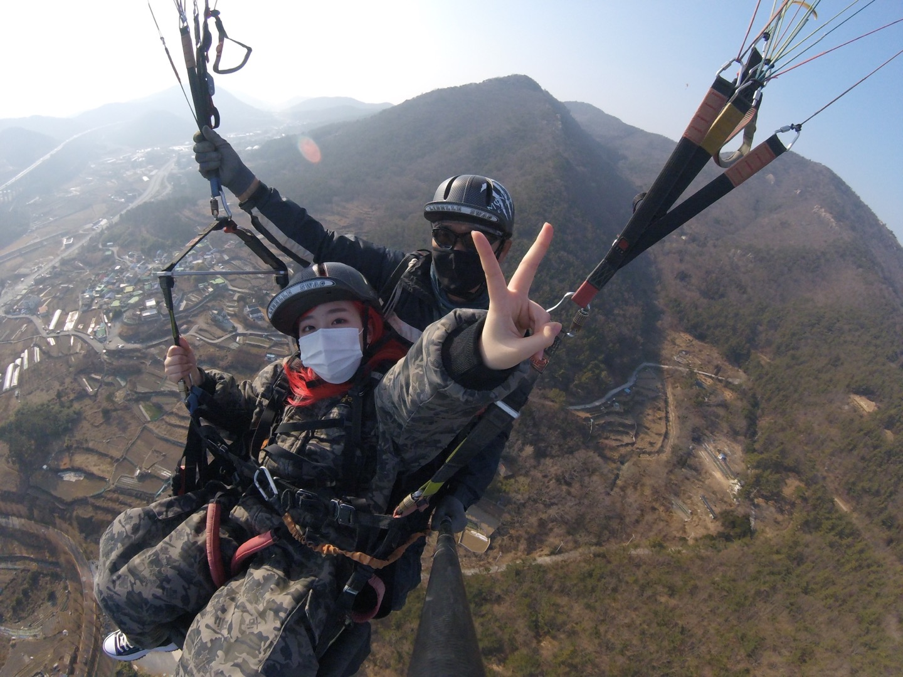

2022년 2월 12일~13일 나홀로 1박2일 뚜벅이 여수여행
혼자서도 맛있게 게장 뚝딱하고 택시로 15분정도 걸리는 Ncnp 카페에 도착해 크레이프 케잌과 아메리카노 맛있게 먹었다! (지금 생각해보면 이게 문제였던듯,,,) 오션뷰에 대형카페라서 너무 예쁘고 테라스에서 물멍하는 것도 너무 좋았다. 일부러 패러글라이딩 장소와 가까운 카페로 정한 건데 너무 만족ㅎㅎ 사진 많이 못찍었던 게 지금 생각해보면 아쉽다. 그냥 사람들한테 찍어달라고 할걸,,,
대망의 패러글라이딩! 여수를 가기 전 계획을 세울 때부터 가장 기대되고 설레었던 부분이다. 내가 예약한 곳은
'여수 국가대표 패러글라이딩'이다!
초,중,고,대학생까지 학생할인이 가능해서 학생할인으로 미리 예약 진행했고, 예약 시간에 맞춰 가서 주의사항을 확인하며 조금 기다렸다가 차로 패러글라이딩 위치까지 이동한다. (핸드폰은 맡겨야하고 업체 휴대폰으로 영상과 사진을 찍어주시고 그 이후에 내 휴대폰으로 옮겨주신다!) 나는 혼자 갔기 때문에 다른 가족분들과 함께 이동했다.
도착해서는 패러글라이딩복을 입고 다시 한번 더 주의 사항을 듣고 드디어 날았다!!! 절벽으로 마구 달려 날아오르는 경험은 아직도 잊을 수 없는 기억으로 남아있다.

비록 그 이후에 멀미때문에 하늘에서, 그리고 내린 후 땅에서도 많이 고생을 해서 다시는 안할 것 같지만, 인생을 살면서 한번은 해봐야겠다고 생각했던만큼 후회는 없는 경험이었다ㅎㅎ
워낙 내가 멀미가 심해서 그렇고 같이 타신 분들은 아주 재밌게 놀다 가셨다. 평소 놀이기구를 탈 때 멀미를 하지 않는 편이시라면 정말 즐겁게 패러글라이딩을 즐길 수 있을 것 같다.